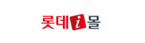
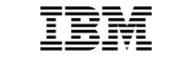

Client & Portpolio
What we've done
엠투엠글로벌 고객과 소통하고 공감하며 함께 성장해가고 있습니다.
Major Clients
엠투엠글로벌의 역사는 이제 시작입니다. 굳건하게 다져온 기반 위에, 하나 하나 성과를 만들어 내겠습니다.
온라인쇼핑몰 분야



유통 분야

제조 분야
IT 분야

금융 분야
항공 분야
Portfolio
이커머스/금융 구축 및 운영
2025 ~ 2024
- 2025.09KCar C2C 서비스 구축
- 2025.08서플러스 글로벌 세미마켓 운영
- 2025.03파라타항공 UI/UX 고도화
- 2025.01오늘농사 운영
- 2025.01수협중앙회 쇼핑몰 재구축 사업자선정
- 2024.07농협은행 용도품관리시스템 프로젝트
- 2024.05서플러스글로벌 B2B 세미마켓 플랫폼 프로젝트
2023 ~ 2022
- 2023.12NH 오늘농사 모바일 어플리케이션 3차고도화 프로젝트
- 2023.03서린상사 B2B 원자재 플랫폼 2차 고도화 프로젝트
- 2023.01농협몰 스마트 유통 차세대 대응 개발
- 2022.12다이소 차세대 커머스 플랫폼 구축 프로젝트
- 2022.12SKT 구독서비스 플랫폼 구축 1단계 분석/설계 프로젝트
- 2022.07CJ 대한통운 로봇통합 플랫폼 April 구축 프로젝트
- 2022.06농협몰 스마트 유통 대응 분석 및 설계 프로젝트
- 2022.05농협몰 새벽배송 플랫폼 개발 프로젝트
- 2022.03서린상사 B2B 원자재 플랫폼 1차 고도화 프로젝트
2021 ~ 2020
- 2021.10K-Car 중고차 거래 플랫폼 개편 프로젝트
- 2021.10LG전자 베스트샵 사이트 개편 프로젝트
- 2021.04하나로유통 농협몰 PSCM 모바일 구축 프로젝트
- 2021.01서린상사 B2B원자재 플랫폼 구축 프로젝트
- 2020.07LG U+ 홈서비스 플랫폼 구축 프로젝트
- 2020.07빌리콘 MultiMall 클라우드 기반 서비스 구축 프로젝트
- 2020.05롯데On 쇼핑몰 운영 프로젝트
2019 ~ 2016
- 2019.08농협몰 고도화 구축 프로젝트
- 2019.04롯데on 구축 프로젝트
- 2018.03중진공 온라인 수출 통합 플랫폼 2차 고도화 프로젝트
- 2018.02농협몰 운영 프로젝트
- 2017.05중진공 온라인 수출 통합 플랫폼 1차 고도화 프로젝트
- 2017.05현대 리바트 차세대 온라인 플랫폼 구축 및 안정화 프로젝트
- 2017.01농협몰 구축 프로젝트
- 2016.07신세계 DutyFree 인터넷 쇼핑몰 구축 프로젝트
- 2016.03신세계 TV 홈쇼핑 구축 프로젝트
2015 ~ 2012
- 2015.12벨아이에스 쇼핑몰 솔루션 구축
- 2015.11교보문고 온라인 주문 플랫폼 구축
- 2015.03롯데닷컴 T-Mall 연동 및 모바일 중문 사이트 개발
- 2013.12롯데홈쇼핑 CS모바일 구축 프로젝트
- 2012.09롯데i몰 운영 프로젝트
- 2012.09롯데i몰 재구축 프로젝트
- 2012.04롯데닷컴 나이키 모바일 시스템 구축
- 2012.03NS홈쇼핑 운영 프로젝트
- 2012.02홈플러스 스타일몰 구축 프로젝트
2011 ~ 2007
- 2011.1111번가 가격비교 브랜딩 사이트 구축
- 2010.08아다다스 e-Tail 쇼핑몰 구축 프로젝트
- 2010.02롯데쇼핑 법인 B2E몰 구축
- 2008.08커머스플래닛 네오탐 쇼핑몰 유지보수
- 2008.06현대홈쇼핑 고도화 프로젝트
- 2008.01신라DutyFree 온라인 면세점 구축
2011 ~ 2007
- 2004.12대우마산 백화점 쇼핑몰 운영 프로젝트
- 2004.07대우전자 온라인 쇼핑몰 구축 프로젝트
- 2004.06소리바다 온라인 쇼핑몰 구축 프로젝트
- 2004.05천리안 온라인쇼핑몰 구축 프로젝트
- 2004.05Imbc 온라인 소핑몰 구축 프로젝트
- 2003.09일간스포츠 온라인 쇼핑몰 구축 프로젝트
- 2003.09조인스닷컴 온라인 쇼핑몰 구축 프로젝트
- 2003.03NRC쇼핑몰 구축 프로젝트
- 2002.07다이얼패드 쇼핑몰 구축 프로젝트
물류·무역·공공 사업
2024 ~ 2022
- 2025.09제주항공 기내 통합운영 시스템 고도화
- 2024.07CJ 대한통운 로봇물류시스템 고도화 3차
- 2023.10한국보팍 VTK Portal 개발 프로젝트
- 2023.03CJ 대한통운 로봇물류시스템 고도화 2차
- 2022.07CJ 대한통운 로봇물류시스템 구축 프로젝트
- 2022.05KTC 지능형 시험인증 시스템 3차 고도화 프로젝트
2021 ~ 2018
- 2021.11KTC 지능형 시험인증 시스템 2차 고도화 프로젝트
- 2020.10KTC 지능형 차세대 시험인증 시스템 구축 프로젝트
- 2020.09농협하나로유통 디지털 풀필먼트 (DFC) 구축 프로젝트
- 2019.12NHNKCP 영업시스템 고도화 프로젝트
- 2019.07국제원산지정보원 예비조사 관리시스템 운영 프로젝트
- 2019.07금호폴리캠 MES 구축 프로젝트
- 2018.07한국보팍터미널시스템 구축 프로젝트
- 2018.06KTNET 부패방지 종합 시스템 구축 프로젝트
- 2018.05중진공 온라인 수출 통합 플랫폼 2차 고도화 프로젝트
- 2018.05금호타이어 WMS 구축 프로젝트
2017 ~ 2013
- 2017.05중진공 온라인 수출 통합 플랫폼 1차 고도화 프로젝트
- 2016.01관세청 4세대 FTA 구축 3단계 프로젝트
- 2016.01STX EDI 운영 프로젝트
- 2016.01삼진 원산지 관리 시스템 운영 프로젝트
- 2015.06STX 수출 신용장 EDI 구축 프로젝트
- 2015.03유로지스넷 WMS 구축 프로젝트
- 2015.01관세청 4세대 FTA 구축 2단계 프로젝트
- 2014.11한국원자력안전기술원 안전규제 ISP 프로젝트
- 2014.05삼진 원산지 관리 시스템 구축 프로젝트
- 2014.04유도/아비만전자 FTA 시스템 구축 프로젝트
- 2014.01STX EDI 시스템 운영 프로젝트
- 2013.12현대모비스 관세환급 시스템 개발 프로젝트
- 2013.04관세청 4세대 FTA 구축 1단계 프로젝트
- 2013.03관세청 FTA PASS 유통망 구축 프로젝트
2012 ~ 2008
- 2012.11탄자니아 NCS 관세 시스템 구축 프로젝트
- 2012.11인천공항항공물류 ISP 프로젝트
- 2012.07관세청 개도국세관 현대화 마스터플랜 BPR/ISP 프로젝트
- 2012.07관세청 원산지 통합 감시 시스템 구축 프로젝트
- 2012.04관세청 수출입 공급망 재설계 프로젝트
- 2011.11유진세렉스 FTA 구축 프로젝트
- 2011.09한국정보화진흥원 글로벌무역 물류정보망 3차 구축 프로젝트
- 2011.05관세청 관세무역포털 개발 프로젝트
- 2011.04현대자동차 FTA HUB 구축 및 운영 프로젝트
- 2010.09중진공 FTA ISP 컨설팅 프로젝트
- 2010.07한국정보화진흥원 글로벌무역 물류정보망 2차 구축 프로젝트
- 2010.06관세청 FTA 구축 프로젝트
- 2010.03국제원산지정보원 예비조사 관리시스템 구축
- 2009.04KTNET 전자무역포털 운영지원 프로젝트
- 2009.01한국정보화진흥원 글로벌무역 물류정보망 1차 구축 프로젝트
- 2008.10KTNET 글로벌 무역 물류 정보망 구축 프로젝트
2007 ~ 2002
- 2007.11KTNET 차세대 CKD 프로젝트
- 2007.08KTNET 동아시아전자 무역 프로젝트
- 2007.06KTNET ASEM 전자무역 프로젝트
- 2006.08삼성SDS 항공물류시스템 구축 프로젝트
- 2006.07KTNET동북아 SCM 허브 2차 구축 프로젝트
- 2006.06KTNET ASEM 전자무역 구축 프로젝트
- 2005.07KTNET ASEM 전자무역 구축 프로젝트
- 2005.02KTNET 동북아 SCM 허브 1차 구축 프로젝트
- 2004.10KTNET ASEM ASP 구축 프로젝트
- 2004.09KTNET 동아시아 전자무역 네트워크 구축 프로젝트
- 2004.04KTNET ASEM 전자무역 구축 프로젝트
- 2004.01KTNET B2B 물류 용역 프로젝트
- 2003.07KTNET eTradeHub 확산 사업
- 2002.07KTNET 한•일 eTradeHub 구축 프로젝트